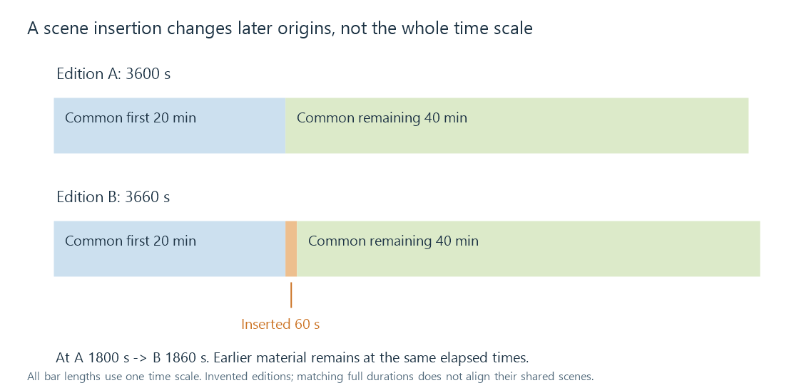

Subtitle edition mismatches
Subtitle edition mismatches arise when subtitles and video refer to different scene sequences, requiring more than one global time adjustment.
A subtitle can be in the correct language, belong to the correct film, and match perfectly for twenty minutes before suddenly becoming wrong. Different editions can add a scene, remove a recap, change an opening, reorder material or combine episodes differently.
The relationship is then about which content occurs where, not merely about a subtitle clock running at the wrong rate.
Two editions with one extra scene
Take an invented 60-minute programme, edition A. Edition B contains the same material but inserts a 60-second scene at A's 20-minute boundary.

For cues tied to matching content:
| Time in A's subtitle | Matching time in B | Correction |
|---|---|---|
| 10 min: 600 s | 600 s | 0 |
| 30 min: 1,800 s | 1,860 s | +60 s |
| 50 min: 3,000 s | 3,060 s | +60 s |
The first section needs no shift. The later section needs +60 seconds. This is a step, unlike the steadily increasing correction from a constant rate mismatch.
The inserted scene also contains material for which A's subtitle has no lines. A time transform cannot invent that missing translation or caption content.
Matching the complete duration is not enough
A is 3,600 seconds; B is 3,660. Stretching all A times by 3660/3600 = 61/60 makes the endpoint durations match.
But a cue at 600 seconds would move to 610, although its matching speech in B is still at 600. A cue at 2,400 would move to 2,440, while its intended position after the insertion is 2,460.
The total duration fits and the intermediate content does not. Matching an opening and final anchor similarly cannot establish that every intervening scene has the same timing relationship.
A piecewise map describes matching sections
For this simple example, using s as A's cue time:
matching material before 1200 s: v = s
matching material from 1200 s onward: v = s + 60
Each unchanged section has its own origin relationship. A deletion gives a later negative shift; several edits produce several boundaries. Reordered scenes need correspondence by content rather than one monotonically increasing shift formula.
A cue spanning the insertion boundary requires review. Moving only its start leaves the old end in the wrong place. Moving both by one section's offset can make it cover the inserted scene. Splitting the cue, retiming the text or finding the correctly authored edition can be appropriate, depending on what the words describe.
For graphics or animated subtitles, presentation state around that boundary also needs to remain coherent. An object or animation established in removed material may not have a meaningful state at the next retained scene.
Identify the content before retiming it
For an Emby library, confirm the actual version being played and the actual subtitle selected. Release labels, theatrical versus extended editions, opening/recap lengths and distinctive scene transitions provide useful matching evidence.
Sample several recognizable lines before and after suspected boundaries. A sudden stable jump supports an edit-origin change; a smooth slope supports a rate relationship. A track can contain both.
When the scene sequence differs substantially, subtitles authored for the actual edition provide the missing content and timing together. A piecewise map can retime shared material, but it cannot recover dialogue that its source edition never contained.